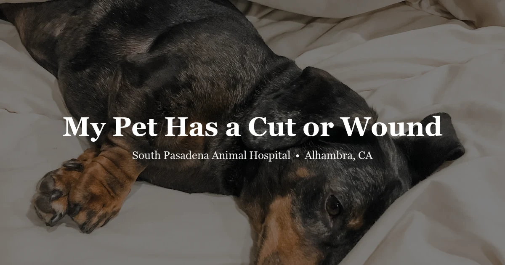

April 23, 2026 · 7 min read
My Pet Has a Cut or Wound: When to Go to the Vet vs. Treat at Home

We get a lot of wound calls. The question is almost always the same: "Can I handle this at home, or do I need to bring her in?" The honest answer is: it depends entirely on the location, depth, and how it happened. A shallow half-inch scrape on a dog's side is different from a puncture wound with unknown depth. A bite wound from another dog that looks small on the outside is almost always a clinic visit.
Here's how to assess what you're looking at.
What you're actually looking at
Not all wounds are the same situation. The type matters more than the size:
- Abrasions — surface scrapes, often from falls or rough ground. Minor, but clean them and watch for infection
- Lacerations — cuts through skin. Small and shallow may close on their own; deep or gaping usually need sutures — don't let it get infected waiting
- Puncture wounds — narrow opening, but often much deeper than they look. Teeth, thorns, nails. Bacteria go in with them. Small hole outside ≠ small wound inside
- Avulsions — tissue torn away completely. Road rash injuries, dragged limbs. Nearly always need veterinary care
- Contusions — blunt trauma, bleeding under the skin without breaking it. Swelling, tenderness, sometimes discoloration through the fur. The skin surface may look fine
What You Can Manage at Home
Minor wounds can often be handled at home initially — but all of these conditions need to be true:
- Under about half an inch long
- Shallow — skin surface only, nothing visible below
- Bleeding slows and stops within 5–10 minutes of steady direct pressure
- Wound edges aren't gaping open
- Not on the face, paw pad, near a joint, over the eye, or in the armpit or groin
- No visible foreign material in the wound
- Pet isn't showing shock signs: pale gums, rapid shallow breathing, weakness, collapse
If those all check out: clip surrounding fur if you can do it without stressing the animal. Flush for 2–3 minutes with sterile saline or clean lukewarm water. Apply a thin layer of veterinary antiseptic if you have it. Cover loosely to discourage licking. Check it twice a day for the next 48–72 hours — you're watching for redness spreading outward, warmth, swelling, any discharge, or odor.
Three things not to do: hydrogen peroxide damages healing tissue, not just bacteria — skip it. Antibiotic ointments with neomycin or bacitracin need caution — some formulations are toxic if licked, and cats lick everything. Don't bandage tightly — on a limb especially, you can cut off circulation faster than you'd think.
When You Come In
These need veterinary evaluation — same-day:
- Bleeding that doesn't slow within 10 minutes of steady direct pressure
- Wounds longer than half an inch or with edges that won't stay closed
- Deep enough to see tissue, fat, or muscle beneath the skin surface
- Any wound on a paw pad — complex structure, poor healing affects mobility
- Any wound near a joint — joint penetration is a surgical emergency
- Any puncture wound, regardless of how small it looks
- Any bite wound from another animal — see below
- Signs of infection at 24–48 hours: swelling, pus, warmth, foul smell
- Wounds the pet keeps licking through any bandage you apply
- Wounds on the face, near the eye, or on the ear
Bite Wounds: Always More Than They Look
This is the wound category we see consistently underestimated. When a dog or cat is bitten by another animal, the visible wound tells you almost nothing about the actual damage.
Teeth create a puncture-and-crush injury. They penetrate the skin and compress the tissue beneath it, creating damage that extends much deeper and wider than the small hole on the surface. The skin often closes over quickly — trapping bacteria in a warm, low-oxygen environment where they thrive. What looks like a tiny bite mark on a dog's shoulder can have a pocket of damaged muscle underneath that turns into a serious abscess within 48–72 hours.
Animal mouths carry bacteria — Pasteurella, Staphylococcus, anaerobes — that are well adapted to the exact environment a closed bite wound creates. Without debridement and proper treatment, abscess formation is the rule, not the exception.
Our recommendation: every bite wound gets evaluated. Even if the pet seems comfortable. We'll probe it to assess depth, flush it thoroughly, and decide whether antibiotic coverage and closure — or intentional open drainage — is the right approach. Closing a bite wound prematurely traps the infection inside.
One more thing: any bite from wildlife — raccoon, coyote, bat, fox — raises the question of rabies exposure, especially if vaccines aren't current. That's a public health issue, not just a veterinary one. Call us and we'll advise on reporting requirements.
Wounds in Exotic Pets
Rabbit skin is thin and fragile — it tears more easily than dog or cat skin, and what looks minor may be more extensive. Any wound on a rabbit in warm weather also raises the risk of fly strike (myiasis) — maggot infestation. That's an emergency if found. Keep wounds clean and get a veterinary opinion quickly. Rabbits are also sensitive to wound-related pain and can deteriorate from stress faster than larger animals.
Guinea pigs and rodents housed together bite each other. Bite wounds in small animals go deep relative to body size, and abscesses in guinea pigs are thick-walled — they don't drain the way dog abscesses do. Veterinary management is usually needed to surgically remove or address them.
Birds that come into contact with a cat's claws or teeth — even with no visible wound — need to be seen by an avian-knowledgeable vet within hours. Pasteurella bacteria from cat claws and mouths causes a rapidly fatal septicemia in birds. The contact happened and the bird looks fine right now — that's irrelevant. Start antibiotics prophylactically. We can't overstate how quickly birds deteriorate after cat contact.
Wounds in reptiles heal slowly and are temperature-dependent. A wound that looks superficial won't close properly without correct enclosure temperature. Any wound that isn't improving after a few days, or looks infected, needs a veterinary exam. Don't just adjust the basking light and wait.
Frequently Asked Questions
My dog has a small cut that isn't bleeding much — do I need to see the vet?
Small, shallow cuts under half an inch that aren't gaping and have minimal bleeding can often be managed at home with cleaning and monitoring. Wounds on the face, paw pads, near a joint, or deep enough to see tissue below the surface — vet visit. Redness and swelling developing within 24–48 hours — vet visit.
Can I use hydrogen peroxide on my pet's wound?
No. It damages healthy tissue and impairs healing. Sterile saline or diluted chlorhexidine is what we use and recommend. Call us for guidance on anything more than a superficial wound.
Why are bite wounds so dangerous even when they look small?
The visible hole is much smaller than the damage underneath. Teeth create crush injury and drive bacteria deep into warm, low-oxygen tissue — a perfect environment for abscess development. A bite wound that looks fine today can be a serious infection in 48 hours. All bite wounds should be evaluated.
What should I do if my pet is bleeding heavily?
Firm direct pressure with a clean cloth or gauze, held without lifting for 5–10 minutes. Keep the pet calm and warm. Head to the vet immediately — call us at (626) 441-1314. Active heavy bleeding from any wound is an emergency.
Should I try to bandage my pet's wound at home?
A loose, clean covering for a minor wound is fine. Don't bandage tightly — on a leg especially, this can cut off circulation. If you're uncertain about severity, it's better to have us look at it than to bandage and wait. Book online or call for a same-day evaluation.